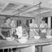
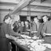
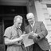
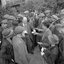
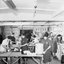
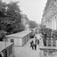
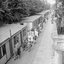
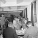
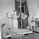

Bombs dropped in the ward of: Brompton
Description
Total number of bombs dropped from 7th October 1940 to 6th June 1941 in Brompton:
- High Explosive Bomb
- 42
Number of bombs dropped during the week of 7th October 1940 to 14th of October:
Number of bombs dropped during the first 24h of the Blitz:
No bombs were registered in this area
Memories in Brompton
Read people's stories relating to this area:
Contributed originally by Huddersfield Local Studies Library (BBC WW2 People's War)
This story has been submitted to the People's War site by Pam Riding of Kirklees Libraries on behalf of Mrs Ashton and has been added to the site with her permission. The author fully understands the site's terms and conditions.
Early in January 1944, I joined the Women’s Royal Naval Service after having been employed in the Dewsbury Civil Defence Offices from the time of leaving school.
After initial training as a teleprinter operator in London, I was sent to Hampshire and accommodated in a Fort in Fareham. From there I was transported to the hills above Portsmouth to work in SHAEF (Supreme Headquarters Allied Expeditionary Force). One had to go down numerous steps to a busy underground establishment. The personnel who worked down there were on watches (shifts) working eight hours ON and OFF duty for a period of 72 hours. I also learned that personnel who had worked there for some time had to undergo regular sunray treatment. After one spell of duty, however, I was called to the Duty Officer and informed that I was to return to London and I had no idea why I was being moved so quickly. Issued with the requisite railway pass, I returned to London and my instructions were to report to a new billet at Princess Gate, South Kensington. Next day I was told to report to Norfolk House, St James’s Square and thus became a member of staff of the Allied Naval Expeditionary Force (ANCXF) under the command of Admiral Sir Bertram Ramsay. My address for the remainder of the time I was with them was Naval Part 1645, C/o GPO London.
I soon realised that the work was of great secrecy and importance and that we were the Headquarters for the Allied Naval invasion of Europe. We received and transmitted many signals in connection with “Overlord” referring to Mulberry Harbour, Pluto Pipe Line, etc and much information which became news items after the successful liberation of Europe. When a “top secret” message came through on our teleprinter it had to be sealed and stamped by the duty officer and then delivered to Admiralty house by whoever had received it on their machine. We were working eight hour watches involving mornings, afternoons and nights. I dreaded the “top secret” message coming through on my machine, having never been out alone in Dewsbury, my home town, during the middle of the night, but sure enough, on one occasion it did, at 3.am. It was totally black outside and I ran all the way to Admiralty House at the top of the Mall and back again. I was thankful that it only occurred once, but maybe I would have felt less afraid a second time at being alone in the middle of the night on the streets of London.
There were about 100 Wrens in the party and in April we were sent to the South of England to Southwick House, about seven miles from Portsmouth. Most of the girls, having been in London for some time, were sorry to leave to go to a remote area and there were groans as the coach set off. However, being a cheery crowd, with the usual British sprit, everyone settled down to accepting a change of venue. The spirit was flagging somewhat when out destination was reached. We came to a pretty village consisting of about two dozen houses. Masses of barbed wire and an endlessly long drive brought us to a typically old type of English Manor house. We learned it was called Southwick House. To the rear of the building were two long prefabricated sheds, still being prepared for us. The water was just being laid on and we had to scramble over planks to reach our respective quarters. I was quartered in a long narrow room with 14/15 double bunks down each side of a narrow space. Some folk would say, “What of it” and that “it could have been worse,” but considering we were all on duty at different times, it proved to be rather hectic. We worked the same hourly watches as in London, and every third day we had a turn on night duty. After a particularly tiring night we would fall into bed exhausted, only to be awakened about an hour later when a case would be banged on to our feet. Under the bunks was the only place to keep our cases and when the stewards swept the room, they hurled the cases on to the beds, regardless of any occupants. Nicely dropping off to sleep again, we could be wakened by chattering as off-duty Wrens prepared to go on duty after lunch. It was a hectic life but pretty soon we became accustomed to sleeping in snatches. To compensate, however, the weather was glorious and in our free time, we were taken by liberty boats (marine lorries) to spend a couple of hours on Hayling Island and to enjoy the sands and sea. The only occupants of the Island were members of the forces, as the civilian population had been evacuated. On occasions, also, we managed to get a lift into Portsmouth and visited the cinema. When jeeps passed us on the roads we could always rely on a lift by the friendly American allies, but all the same it was better to travel in numbers!
The less said about the food, the better — cheese and minced beef dishes. On night duty the only meal consisted of corn beef, with margarine, together with crumbly bread from which to make sandwiches, but there were flies creeping around all the time which was off putting. I was lucky to have received some jars of jam from home, but with wasps hovering around, it was almost impossible to eat it.
The teleprinter room was a hive of activity and we could never relax for one moment as we sent signal after signal in connection with the coming most important event of our lives — the liberation of Europe and the end of the war. Whatever the discomfort, no-one objected; everyone was too intent on their work and the small part we were playing in this moment of history. I welcomed the change from routine when I was transferred for a short time to the deciphering room, which overlooked the official courtyard at the front of the building. We witnessed the arrival and departure of some very important and high-ranking officials. I shall always remember glancing outside upon hearing a jeep stop with a squeak of brakes. Out stepped “Monty” (General Montgomery). He glanced towards our window and raised his hand in salute. He looked so cheerful and friendly — such a busy person and yet he found time to acknowledge us with a wave. He wore a long grey pullover and his famous beret — nothing to signify the importance of his position. Shortly afterwards, General Eisenhower stepped out of his car — followed by his little dog! Next came Air Marshall Tedder — he was so tall and stately — immaculate in his blue Air Force uniform. We became quite used to seeing these important leaders and on one occasion, Winston Churchill passed on his way to the control room. With all these comings and goings we realised that the invasion was very close indeed.
On June 5th we were told by the Commander that the invasion boats had set sail for Europe. On that evening I was on night duty and knew that it was the most memorable occasion of my life. At midnight, the Commander told us that in 20 minutes our first airborne troops would land in Normandy.
The office seemed chilled with expectance and no-one could speak, for I am sure that waiting for news is almost as bad as taking part!. One could imagine all the dangers and what a risk was being undertaken and the lives of our brave invaders being so much at risk. I thought of my folks at home, soundly asleep, little knowing of the momentous occasion taking place and I offered silent prayers on behalf of all those taking part. Our first official news came through in the early hours from the “Augusta” and the “Scilla” — all was being carried our according to plan. Within a matter of days our teleprinters were all connected to the ones in Normandy which were manned by the Marines and in between messages we were able to glean a little of what life was like on the other side of the Channel.
The night following the invasion I was not on duty, but during the evening I watched the hundreds of gliders being towed across to France and felt very proud indeed to have helped, even in such an insignificant way, towards the culmination of such a great operation.
Life went on and we began to lose more sleep, not through our work, but by visits from flying bombs. Orders were that the off-duty Wrens had to go down to the cellars and stay there until the”all —clear”. The first night we trundled down carrying blankets and tin hats and settled down in the cellar. None of us could sleep, but all was in darkness when suddenly the girl next to me quietly started to fold up her blanket and move off. Being curious I did the same and much to my surprise, on reaching the half-lit passage, I saw a long line of girls, all creeping stealthily along in order not to waken the officers, for we would certainly have been sent straight back. Someone dropped a steel helmet and we all “froze” but no-one came and thankfully we trecked back to our quarters. In spite of the “doodle bugs” we managed to have a night’s rest and next morning were able to face being “pulled over the rolls” for disobeying orders. The officers only discovered our disappearance some three hours after we had all vanished. The next night I was on duty, so was not obliged to sleep in the cellar, but the girls who were, again refused to stay down, complaining of beetles and mice. We were all ordered to parade and asked which we preferred —beetles or bombs. To which, in chorus, we replied “bombs”. The powers that be decided not to enforce the rule about staying in the cellars during the air raids until proper facilities were provided. The next week was quite a “pantomime” — we would cluster round the windows, watch the red light on the doodle bug and then, when the engine stopped, everyone disappeared like lightning under the bunks. The word “fear” was never mentioned and it was fortunate that we treated the incidents in a light-hearted manner. After a full week had elapsed, with the flying bombs circulating around us, it was announced that the cellars were now fit to sleep in. Three-tiered bunks had been neatly arranged, walls whitened, floors scrubbed and everyone issued with extra mattresses. However, once the accommodation was provided, the sirens never went again, so we did become prepared for bombs, but a little late!
Following the invasion out Group (Naval party 1645) eventually left Southwick House, our work completed in England. Many members continued with the party into France and were finally disbanded in Berlin. It was a sad day when we left Southwick. The months we spent together in London and then Southwick united us in a very special bond of friendship. I still keep in touch with six of the Wrens — after 50 years!
As my marriage was arranged to take place in October, I opted to stay in England and moved to “HMS Duke” in Great Malvern — a shore establishment for new recruits. I was there for a few months and then finally moved to Scarborough where I worked at the Signals Station on Irton Moor until “V E DAY”
Contributed originally by claxtons (BBC WW2 People's War)
WHAT I DID IN THE WAR
I do remember “the day war broke out”, that
is of course the second world war. I was just 10 years old.
First of all the air-raid sirens went almost immediately, shortly followed by the “all-clear” - a false alarm. Secondly I remember being quite upset and crying after I had gone to bed, because I was afraid.
It must have distressed my parents. We already had our gas masks and our identity cards - I still have them both.
We had to carry the gas masks with us all the time. Later on, an additional section was added, due to a new potent gas.
Nothing much happened in the first year, except that our schooling was interrupted. Ann and I and a few others living locally went to school at the house of a teacher who lived nearby (about a half-a-mile away instead of 1 1/2 miles).
I think that lasted for the first year but then we went back to the school, just in time for the real war to start.
The Blitz
The battle of Britain started in August 1940 and we saw some of the dog-fights high in the sky. Also the bombing started and we spent some time at school in the air-raid
shelters. Mostly we sang songs. There were benches to sit on, along the walls.
At home we also had a shelter - of sorts ! Our house was a mainly wooden bungalow with a corrugated-iron roof, raised on stilts (for flood protection) and the shelter was built under the only room which was made of concrete blocks with a tiled roof - which happened to be my bedroom.
The floor of the room was laid with old
mattresses and there was a trap-door in the floor to getinto the shelter (there was also access from outside). Underneath had been dug out a bit and sides had been
added (of wood).
We had a paraffin stove for heating and cooking and took down hot-water bottles and blankets, because we had to spend nearly every night in there during the autumn of
1940.This was because the German planes attacking London headed for the River Thames and had the extra land-mark
of the large reservoirs in our area.
So in fact although we heard the planes going over we didn’t get bombing - except once. We had our local “blitz” one night. My father put out an incendiary bomb which landed in our garden and there were a number of small high-explosive bombs around the area. We explored the craters the next day.
Apart from that, we had the noise every night of the anti-aircraft guns. There was a box barrage fired from nearby, which made a tremendous racket. (Shells exploded
in a cubic area of sky and nothing in it could survive - but there was never anything in ours!)
We collected lots of shrapnel from these affairs. Shrapnel could kill - one of the reasons air-raid wardens and others wore tin hats.
My father was an air-raid warden and was based at a post near our house. He was on duty some nights of the week.
He also did night duty at the Natural History museum in London, where he worked. They had much more bombing and the museum suffered a lot, with incendiary bombs and high explosives, including a very big one called a land-mine.
Many of the books from his library had been evacuated to the country, but some rare ones were caught in the fire and we had individual pages of unique books pinned
on a clothes-line in our kitchen, to dry out.
Before the war there were 15 staff, but during the war there were only two of them. They did have to provide information for potential targets from time to time.
I think it was for his devoted work during the war as much as anything that he was awarded an MBE when he retired.
Incidently he cycled to work throughout the war - 16 miles each way.I went with him a few times when I was big enough. It was exhausting.
There was one occasion when he and two friends were in a fishing punt near the weir in Sunbury that they saw three planes going in to land at Vickers factory at
Brooklands and they saw that the last one was German ! It had sneaked in that way and dropped its bombs on the factory.
My mother was in the WVS (Womens Voluntary Service). On one occasion she mentioned in conversation that her father-in-law was an air marshall. She had missed out two words, because he was an air-raid shelter arshall!
One of the things she did was to accompany evacuees on trains - this was while we were in Blackpool.
The flying bombs
I remember the flying bombs very well and, in particular, the night the V2 rockets started. They were very frightening because you couldn’t hear them coming - just the explosion when they landed.
One Sunday we had a lot of people at the house and we went on an expedition up the river where we lived. At the end was a weir called Tumbling Bay and it was an exciting expedition because you had to get out and push the boat over shallows.
After we had started back, the air-raid siren went, which in those days meant a flying bomb was headed our way. As we arrived back at our house we heard the bomb
coming (Ishall never forget that noise) and heard the engine cut out. That usually meant an immediate vertical drop and so safety for us as we could tell it was still
some distance away.
I rushed to the top of the bank to look for the explosion and I saw the flying bomb apparently coming straight towards us - it was of the rarer glider type. I shouted a warning, then realised it was not heading
quite our way.
Well, it hit that weir at Tumbling Bay where we had been thirty minutes earlier. Two people were killed and the weir flattened , causing the river to flood.
Of course we realised afterwards that we would have set off for home when the siren went, anyway, so would have been safe, but a Dutch merchant sea captain visiting us that day, who had been through numerous
convoys, said he had never been more frightened.
I think it was that event as much as anything that caused my parents to arrange for my sister and I to be evacuated to Blackpool to my aunt and uncle, where we
stayed from August 1944 till March 1945.
The German prisoners
Our house was almost beside the Thames River Board offices and one day agroup of men appeared working in the grounds. Their working clothes had large coloured patches on the jacket and trousers: they were
prisoners of war.
My mother made them tea and gradually my parents became friendly with them - one in particular named Eric, who in fact was nearer my age than theirs.
Their camp was about 10 miles away and my father, my sister and I cycled there once to visit them in the camp. We were allowed in without any difficulty.
After the war, Eric brought his wife over to visit my parents and they remained in touch for many years. I think all the prisoners appreciated meeting some
ordinary English people, on friendly terms.
Food
As a child my diet was normal. My mother prepared the food and had the problem of making do during the war, when there were shortages.
We did not have sugar in our
tea and always had a surplus which could be exchanged with other people for other rationed foods (this was the fringe of the so-called black market).
We had ration books, which were partly for portions of specific food, such as butter (two ounces a week) and partly for a choice of less basic items (such as tinned food) by use of a points system.
The only eggs were dried eggs, in powder form. Some people were favoured by shop-keepers, hence the term “under-the-counter”.
We always ate together as a family although there was a time when my father had a special diet to try to cure or avoid attacks of migraine - he suffered very badly from these in middle age and could be prostated for two days at a time, about once a fortnight at the worst.
He had always been keen on dieting for health, but didn’t inflict it upon the rest of us.
School dinners started at primary school, just after the war started, presumably as government policy to ensure an adequate diet.
Certainly I never remember not having enough to eat, although I have a
recollection of seeing oranges for what seemed like the first time when visiting a Dutch ship in harbour in London near the end of the war.
Immediately after the war food was just as short. I remember going to what were called British Restaurants, where the food was a bit like school dinners except that there was some choice.
These were again Government policy. Rationing still existed when I got married in 1954, but only for clothing, not for any food.
D Day and after
D day caused great excitement, We had a map of France on the wall, with coloured flags for the Allies and the Germans and we listened to the news to find out how
to move them.
I remember seeing American bombers flying back from daylight bombing raids, sometimes with huge chunks missing where they had been hit.
VE Day
This was the day to celebrate victory in Europe. I think it was in June 1945. We had a big outdoor party at our house. All the scouts and guides were there and lots of other people.
We had a bonfire on which we burned an effigy of Hitler. My parents obtained from somewhere a large number of coloured jars in which they put candles, so that we had
coloured lights. All the flags that could be found were flown. It was a great occasion.
VJ Day
This was in August 1945 and I was at school harvest camp. We joined in the celebrations in the Berkshire village where we were billeted. They had a huge bonfire and we
boys had great fun with the local girls.
I had no understanding at the time of the horror of the atom bombs which had achieved this victory.
-------------------------
Images in Brompton
See historic images relating to this area:
Start Image Slideshow
-

-

-

-

-

-

-

-

-
